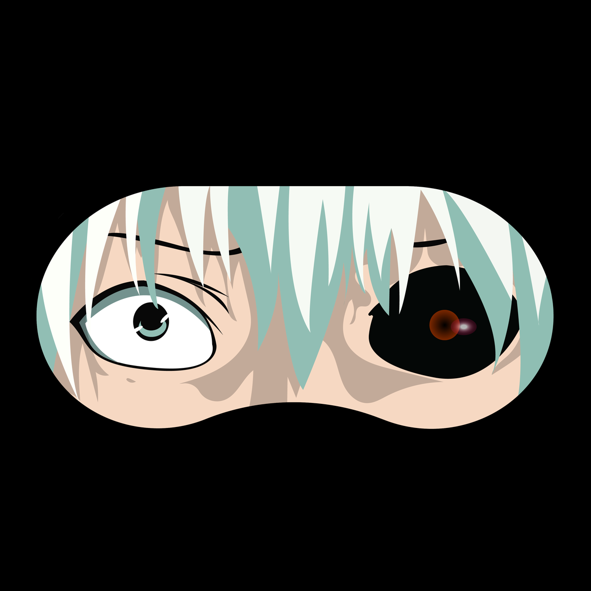

<!-- aside starts -->
<input class="aside-input" type="checkbox" id="aside-checkbox">
<aside id= "aside" class="h-100 position-relative">

    <label id="aisde-label" for="aside-checkbox"><span><i class='icon-ham'></i></span></label>

    <div class="brand d-flex align-items-center py-3">
        <h1 class="brand-name">Enigma</h1>
    </div>

    <div class="profile d-flex align-items-center py-5">
        <figure class="profile-figure m-0 ps-3">
            
        </figure>
        <div class="profile-details ps-4">
            <span class="profile-name">Mehul Patel</span>
            <!-- <span><i class='bx bx-dots-vertical-rounded' ></i></span> -->
        </div>
    </div>

    <div class="nav-name ps-4">
        <h6>Navigation</h6>
    </div>

    <nav class="navbar flex-grow-1">
        <ul class="navbar-nav w-100 ">
            <li class="nav-item pe-2 ">
                <a class="nav-link active py-2" routerLink="user">
                    <span class="nav-link-icon px-4"><i class='icon-compass'></i></span>
                    <span>User form overlay</span>
                </a>
            </li>
            <li class="nav-item pe-2">
                <a class="nav-link py-2" routerLink="todo">
                    <span class="nav-link-icon px-4"><i class='icon-compass'></i></span>
                    <span>todo drag & drop</span>
                </a>
            </li>
            <li class="nav-item pe-2">
                <a class="nav-link py-2" routerLink="users">
                    <span class="nav-link-icon px-4"><i class='icon-compass'></i></span>
                    <span>assessment</span>
                </a>
            </li>
            <li class="nav-item pe-2">
                <a class="nav-link py-2" routerLink="resume">
                    <span class="nav-link-icon px-4"><i class='icon-compass'></i></span>
                    <span>resume builder</span>
                </a>
            </li>
            <li class="nav-item pe-2">
                <a class="nav-link py-2" routerLink="trial">
                    <span class="nav-link-icon px-4"><i class='icon-compass'></i></span>
                    <span>resume builder</span>
                </a>
            </li>
        </ul>
    </nav>
</aside>
<!-- aside ends -->